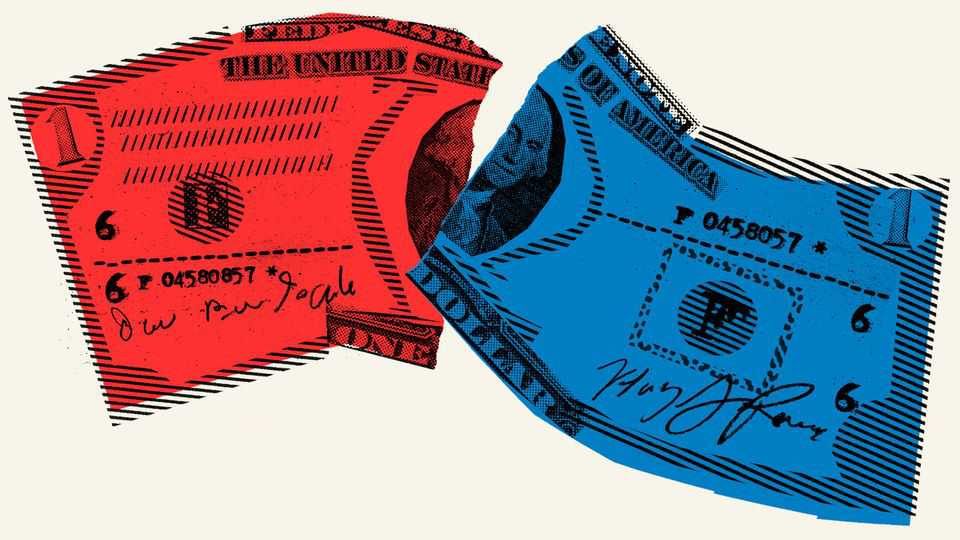
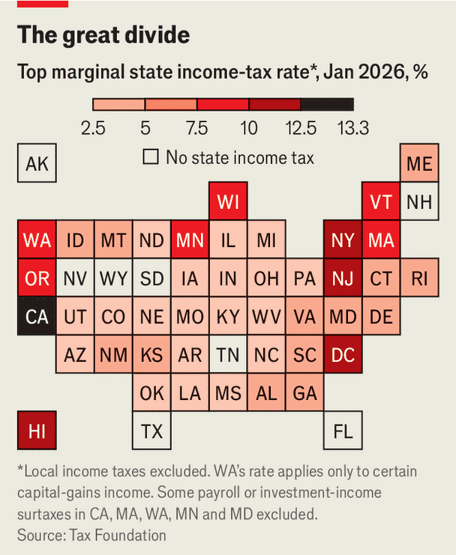
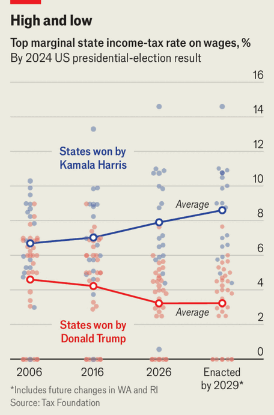

America’s income taxes are diverging
As states led by Democrats try to squeeze the rich, Republicans want to phase out income taxes entirely

Aug 6th 2026
WHEN HE WAS on the pro-wrestling circuit, Glenn Jacobs—known as “Kane” in the ring—worked in nearly every state. The result was a tax return “a foot tall”. Now the Republican mayor of Knox County, Tennessee, Mr Jacobs is pleased that his state eliminated income tax in 2021 and is serving as a model for other states. On August 4th Missouri voted on a constitutional amendment to phase out income tax. It failed, but its presence on the ballot points to a broader trend.
State tax systems are diverging. Much attention has been paid to Democrats’ efforts to raise taxes on the rich. Washington state, for example, introduced an income tax on millionaires this year, and in November Californians will vote on a wealth tax. But Republican-led states are moving in the other direction. Over the past five years 26 states—most led by Republicans—have reduced their individual income-tax rates. Missouri’s top marginal rate has fallen by more than 20% since 2017.

This widening disparity is relatively new. Democrats and Republicans have always differed on taxes, but historically states tried to stay within a range that raised revenue without dampening economic activity. “It used to be possible to speak of a broad middle”, with rates hovering around 6%, says Jared Walczak of the Tax Foundation, a think-tank. “Now you either have low rates, below 4%, or increasingly high-rate states, entering into double digits,” Mr Walczak explains.
Income taxes attract particular attention. Democrats prefer graduated income taxes to flat consumption taxes. The latter are regressive, imposing a disproportionate burden on low-income people, who spend a greater share of what they earn.

Republicans take a different view. Bishop Davidson, the Missouri state representative who sponsored the no-income-tax amendment, argues they are “wildly invasive of people’s privacy”. In January Donald Trump’s Council of Economic Advisers published a report encouraging states to scrap income taxes and replace them with a broader, higher sales tax. It argued that taxing consumption rather than production is more economically efficient. But a tax model that works in one state may not in another. Florida has no income tax, but can collect sales tax from tourists. Texas also lacks an income tax, but fills coffers with fees from oil and gas.
In Missouri income-tax abolitionists consider Tennessee a more realistic model. Mr Davidson has also studied South Carolina, where lawmakers voted in March to draw down income taxes, and North Carolina, a swing state which will vote in November on a ballot measure to lower and cap its flat rate.
Detractors dismiss such comparisons. It is “apples and oranges”, says Ashley Aune, the top Democrat in Missouri’s House, not least because Tennessee had been only minimally reliant on income tax for decades before abolishing it. Missouri, in contrast, depended on income tax for almost two-thirds of its revenue last year. Scott Charton, who advocated against abolishing the income tax, points out that Missourians rejected new taxes on services in 2016. The problem with eliminating one type of tax is that you probably have to raise another. In Missouri, that argument seemed to win out. ■
Stay on top of American politics with The US in brief, our daily newsletter with fast analysis of the most important political news, and Checks and Balance, a weekly note that examines the state of American democracy and the issues that matter to voters.